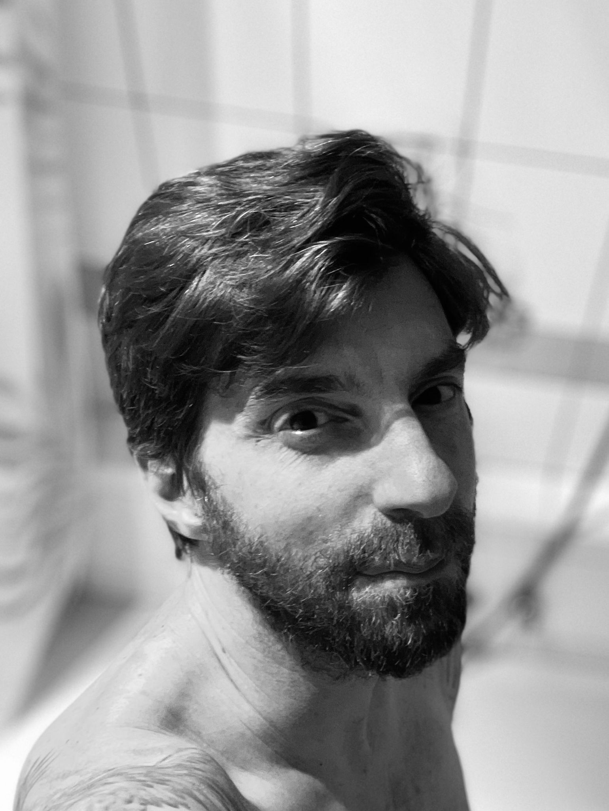

Massages et Tantra : mon parcours et mon approches
À travers mon parcours et mes valeurs, je mets mon énergie et ma passion au service d’expériences de bien-être uniques, pensées avec cœur et présence.
Découvrir

À travers mon parcours et mes valeurs, je mets mon énergie et ma passion au service d’expériences de bien-être uniques, pensées avec cœur et présence.
Découvrir
Qui suis-je?
Didier
Masseur certifié, passionné par le massage bien-être et le développement personnel. J'accompagne chaque personne avec attention et expertise.
Le massage est pour moi un chemin d’éveil qui relie le corps, l’esprit et l’âme. Chaque geste devient un acte sacré, une méditation en mouvement, permettant de se reconnecter à soi-même, d’harmoniser son énergie et d’honorer le corps comme temple.
Une pratique qui dépasse le simple bien-être physique pour offrir une transformation intérieure et une pleine conscience de l’instant.
Mon parcours et mes formations
Mon approche du massage tantrique s’est construite au fil de formations et d’expériences dans le domaine du massage bien-être et des pratiques corporelles conscientes.
Massage tantrique
Je suis certifié en massage tantrique auprès de l’école Tantr’Âme et Corps, un parcours professionnel complet dédié à la pratique du massage tantrique et cachemirien.
Voir la liste officielle des praticiennes certifiées
Massage des 5 continents
Je suis également certifié en massage des 5 continents, une approche de massage bien-être intégrant différentes techniques corporelles et énergétiques.
Site officiel du massage des 5 continents
Mon parcours en Tantra
Mon approche du massage tantrique s’est nourrie de plusieurs cycles de formation et d’exploration dans le domaine du Tantra et du travail corporel conscient.
Cycle Tantra Intégral
Formation dédiée à l’exploration du Tantra dans sa globalité, intégrant le corps, la présence, la relation et la conscience dans le vécu expérientiel.
Site officiel de Tantra Intégral
Stage Skydancing avec Margot.
Formation au Skydancing Tantra, une approche contemporaine du Tantra mettant l’accent sur la conscience, l’énergie, la respiration et l’exploration des états de présence.
Site officiel de SkydacingCycle Homme
Cycle d’exploration autour de la dimension masculine, du rapport au corps, à l’émotionnel et à la présence dans la relation.
Site officiel de Jacques LucasDivers rencontres
J'ai eu l'occasion de suivre l'enseignement de Davide Dubois
Site officiel de David Dubois